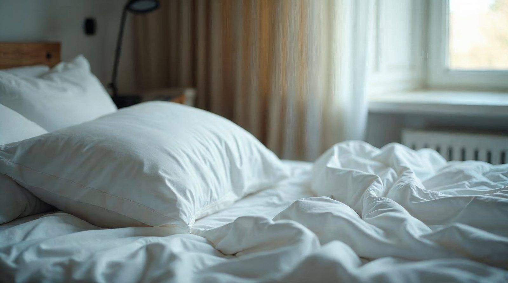
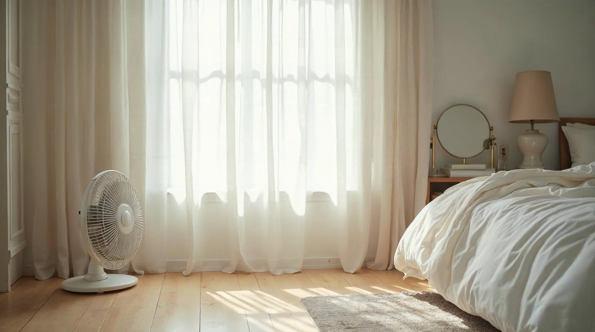
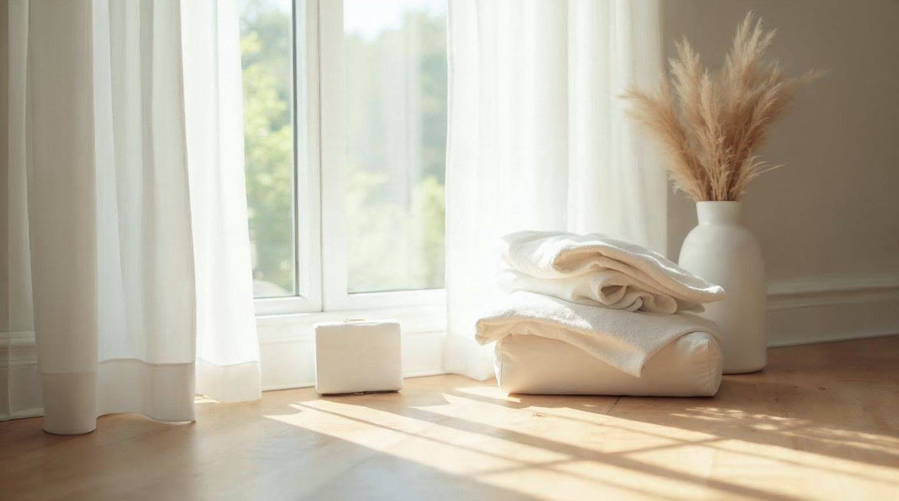
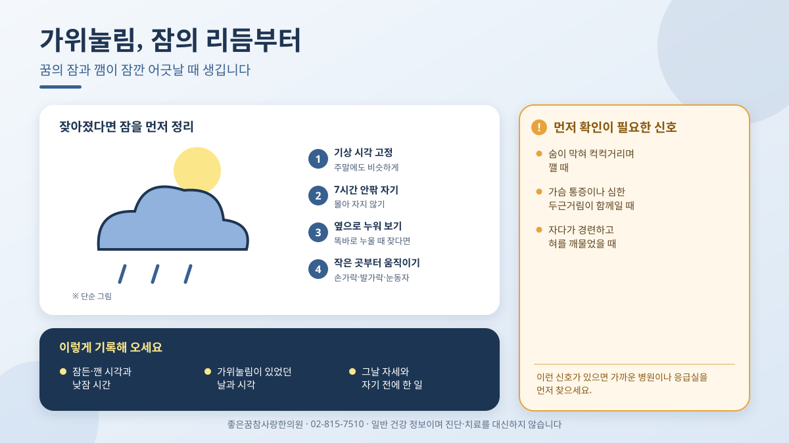

이종호 한의사 감수좋은꿈참사랑한의원 대표원장 (한의사 면허번호 19769)발행 2026-11-26 · 수정 2026-11-26
이 글의 차례
새벽에 문득 눈이 떠졌습니다. 천장이 보이고 방 안의 어둠도 보이는데, 손가락 하나 움직일 수가 없습니다. 소리를 지르려 해도 목소리가 나오지 않습니다. 가슴 위에 무언가 올라앉은 듯 답답하고, 방 한구석에 누군가 서 있는 것만 같습니다. 몇십 초가 몇십 분처럼 흐르다 겨우 손끝이 움직이며 풀려납니다.
이런 경험을 흔히 가위눌림이라고 부릅니다. 한 번 겪고 나면 그날 밤은 다시 잠들기가 무섭고, 다음 날 밤에도 불을 켜 두고 싶어집니다. 진료실에서 이 이야기를 꺼내시는 분들은 대개 조금 망설이며 말씀하십니다. 이상하게 들릴까 봐, 혹시 큰 병은 아닐까 걱정돼서요.
먼저 안심하셔도 될 것은, 가위눌림은 생각보다 많은 사람이 살면서 한 번쯤 겪는 일이라는 점입니다. 의학에서는 이를 수면 마비라고 부르며, 잠과 깸 사이의 경계가 잠깐 어긋날 때 생기는 현상으로 설명합니다. 귀신이나 기가 약해서라기보다, 잠의 구조와 관련이 깊습니다.
다만 가위눌림이 잦아졌다면 지금 잠의 리듬이나 몸과 마음의 긴장이 흔들리고 있다는 신호일 수 있습니다. 오늘 글에서는 가위눌림이 왜 생기는지, 언제 잦아지는지, 그리고 어떻게 줄여 갈 수 있는지를 차근차근 정리해 보겠습니다.

가위눌림은 어떤 모습으로 오나요
가위눌림은 잠들 무렵이나 잠에서 깰 무렵에 주로 생깁니다. 사람마다 조금씩 다르지만 진료실에서 자주 듣는 모습은 비슷합니다.
- 의식은 깨어 있는데 몸이 전혀 움직이지 않는다
- 말을 하거나 소리를 지르려 해도 목소리가 나오지 않는다
- 가슴이 눌리는 듯 답답하고 숨이 막히는 느낌이 든다
- 방 안에 누군가 있는 듯한 느낌이나 형체, 소리가 느껴진다
- 몇 초에서 몇 분 정도 이어지다 저절로 풀린다
- 풀린 뒤에는 심장이 두근거리고 다시 잠들기가 두렵다
무서운 장면이나 소리가 함께 오는 것은 꿈의 일부가 깨어 있는 의식 위로 겹쳐서 생기는 것으로 설명합니다. 실제로 그 자리에 무언가 있는 것이 아니라, 꿈꾸던 뇌가 아직 완전히 꺼지지 않은 상태라고 이해하시면 조금 덜 무섭습니다.
왜 몸이 움직이지 않을까요
우리는 잠을 자는 동안 깊은 잠과 꿈을 꾸는 얕은 잠을 여러 번 오갑니다. 꿈을 꾸는 잠에서는 뇌가 활발히 움직이지만, 꿈속 행동을 실제로 따라 하지 않도록 몸의 근육은 거의 힘이 빠진 상태가 됩니다. 이것은 자는 동안 다치지 않도록 하는 자연스러운 보호 장치입니다.
그런데 꿈을 꾸던 중에 의식이 먼저 깨어나고 근육의 힘은 아직 돌아오지 않으면, 깨어 있는데 몸이 움직이지 않는 상태가 됩니다. 이것이 가위눌림입니다. 보통은 몇십 초 안에 근육의 힘이 돌아오며 저절로 풀립니다.
가슴이 눌리는 느낌도 같은 이유로 설명합니다. 이 상태에서는 숨 쉬는 근육 가운데 일부만 움직여 숨이 얕게 느껴지는데, 깨어 있는 의식은 이를 누군가 가슴을 누르는 것처럼 받아들이기 쉽습니다. 실제로 숨이 멈춘 것은 아니니 너무 걱정하지 않으셔도 됩니다.
한의학에서는 예부터 이런 경험을 잠이 편안하지 못하고 마음이 쉽게 놀라는 상태와 연결해 살펴 왔습니다. 이는 진단명이 아니라 진찰할 때 쓰는 전통적인 표현입니다. 피로가 쌓여 기운이 처진 분, 긴장과 열이 가슴에 몰린 분처럼 몸의 바탕에 따라 살피는 방향이 달라집니다.
언제 가위눌림이 잦아질까요
가위눌림은 잠의 리듬이 흔들릴 때 잦아지는 경향이 있습니다. 아래와 같은 시기에 많이 생긴다고 말씀하시는 분이 많습니다.
- 시험, 마감, 이사처럼 긴장이 큰 일이 몰린 시기
- 밤샘이나 교대근무로 잠드는 시각이 계속 바뀌는 시기
- 며칠 잠이 모자라다가 한꺼번에 몰아 자는 날
- 똑바로 천장을 보고 누워 자는 날
- 늦은 밤 술이나 커피를 마신 날
- 낮잠을 길게 자고 깬 직후
잠이 부족하면 몸은 모자란 꿈의 잠을 서둘러 채우려 하고, 그만큼 꿈의 잠과 깸이 엉키기 쉬워집니다. 그래서 가위눌림이 잦아졌다면 먼저 잠의 양과 시각이 일정한지를 돌아보는 것이 출발점입니다.
가위눌림과 악몽은 어떻게 다른가요
악몽은 꿈속에서 무서운 일을 겪다가 놀라서 깨는 것입니다. 깨고 나면 몸은 바로 움직일 수 있고, 꿈의 내용이 생생하게 기억납니다. 반면 가위눌림은 이미 깨어 있다고 느끼는데 몸이 움직이지 않는다는 점이 다릅니다.
잠꼬대나 몽유처럼 자는 동안 몸이 움직이는 것은 가위눌림과 반대 방향의 일입니다. 자는 동안 소리를 지르거나 팔다리를 크게 휘두르고, 꿈의 내용대로 행동하는 일이 잦다면 수면 전문 진료에서 따로 살펴보는 것이 좋습니다. 특히 나이가 들어 새로 생긴 경우라면 더 그렇습니다.
아이가 잠든 지 한두 시간 뒤 갑자기 울며 소리를 지르고 달래도 잘 깨지 않다가, 다음 날 기억하지 못한다면 야경증일 수 있습니다. 이것도 가위눌림과는 다른 일이라, 아이의 잠 이야기는 따로 여쭤봅니다.
걱정해야 할 가위눌림도 있나요
대부분의 가위눌림은 가끔 생겼다 사라지며 큰 걱정이 필요하지 않습니다. 다만 몇 가지 경우는 수면 전문 진료를 함께 받아 보시길 권합니다.
밤에 충분히 잤는데도 낮에 참을 수 없는 졸음이 쏟아지고, 크게 웃거나 놀랄 때 무릎이나 얼굴 근육에 힘이 순간 빠지는 일이 있다면 기면증 같은 수면 질환을 함께 생각해 볼 수 있습니다. 이런 경우에는 수면 검사가 도움이 됩니다.
코골이가 심하고 가족이 숨이 멈추는 것을 본 적이 있다면 수면 무호흡을 확인해 보는 것이 좋습니다. 숨이 막혀 깨는 경험이 가위눌림처럼 느껴질 수도 있기 때문입니다. 또 가위눌림 때문에 잠드는 것이 두려워 불면이 길어졌다면, 그 불면도 함께 살펴야 합니다.
드시는 약 가운데 잠과 꿈에 영향을 주는 약이 있을 수도 있습니다. 새로운 약을 시작한 뒤 가위눌림이나 생생한 꿈이 늘었다면 처방한 선생님께 알려 주세요. 약은 상의 없이 줄이거나 멈추지 마시고 먼저 이야기해 보시길 권합니다.

스스로 점검해 보기
지금 나의 잠이 어떤지 아래 질문으로 가볍게 점검해 보세요.
- 가위눌림은 한 달에 몇 번 정도 생기나요?
- 잠드는 시각과 깨는 시각이 평일과 주말에 크게 다른가요?
- 하루에 자는 시간이 6시간보다 짧은 날이 많은가요?
- 요즘 마음을 크게 쓰는 일이나 긴장이 이어지고 있나요?
- 낮에 참기 힘든 졸음이 쏟아지는 날이 있나요?
먼저 이렇게 여쭙니다
처음 오시면 저는 가위눌림 그 자체보다 그 앞뒤의 잠과 하루를 먼저 차분히 듣습니다. 그 안에 가위눌림을 부르는 실마리가 숨어 있는 경우가 꽤 많습니다.
질문은 대략 이런 순서로 드립니다. 미리 생각해 오시면 이야기가 훨씬 수월해집니다.
- 가위눌림은 언제부터, 얼마나 자주 생기나요?
- 잠들 무렵인가요, 새벽에 깰 무렵인가요?
- 그때 보이거나 들리는 것이 있나요?
- 잠드는 시각과 깨는 시각, 낮잠은 어떠신가요?
- 술, 커피, 자기 전 휴대폰 사용은 어느 정도인가요?
- 드시는 약이나 최근 시작한 약이 있나요?
일상에서 먼저 해 볼 수 있는 것
가위눌림을 줄이는 가장 기본은 잠의 리듬을 일정하게 만드는 것입니다. 아래 가운데 두세 가지부터 시작해 보세요.
- 잠드는 시각과 일어나는 시각을 주말에도 비슷하게 맞추기
- 하루 7시간 안팎으로 자는 시간을 확보하기
- 똑바로 누워 자다 가위눌림이 잦다면 옆으로 누워 자 보기
- 잠들기 두세 시간 전부터 술과 커피 피하기
- 자기 전 휴대폰과 무서운 영상은 멀리하기
- 낮잠은 오후 이른 시각에 짧게 자기
가위눌림이 왔을 때는 온몸을 한꺼번에 움직이려 애쓰기보다, 손가락이나 발가락, 눈동자처럼 작은 곳을 천천히 움직여 보세요. 숨을 천천히 길게 내쉬며 '곧 풀린다'고 속으로 되뇌는 것도 도움이 됩니다. 몸부림칠수록 더 무섭게 느껴지기 쉽습니다.
풀린 뒤에는 바로 다시 눕기보다 잠깐 일어나 불을 켜고 물 한 모금을 마신 뒤, 마음이 가라앉으면 다시 누우시길 권합니다. 같은 자세로 바로 누우면 다시 가위눌림이 올까 걱정되어 긴장이 오래 남습니다.
자기 전 몸의 긴장을 풀어 주는 시간도 중요합니다. 따뜻한 물로 씻고, 목과 어깨를 천천히 돌려 주고, 누워서 숨을 길게 내쉬는 연습을 몇 분 해 보세요. 하루의 긴장이 몸에 남아 있을수록 잠이 얕고 꿈이 많아지기 쉽습니다.
침실 환경도 함께 돌아보세요. 방이 너무 덥거나 답답하면 잠이 얕아지기 쉽습니다. 이불은 가볍게, 방 온도는 조금 서늘하게 두고, 잠들기 전 잠깐 창을 열어 환기해 주면 좋습니다. 밤새 켜 둔 텔레비전이나 밝은 조명도 잠을 얕게 만드니 꺼 두시길 권합니다.
저녁 식사를 너무 늦게, 많이 드시면 속이 불편해 잠이 자주 끊길 수 있습니다. 잠들기 서너 시간 전에는 식사를 마치고, 늦은 밤에 배가 고프면 따뜻한 우유나 바나나처럼 가벼운 것으로 달래 보세요.
무서운 마음을 다루는 법
가위눌림이 반복되면 잠자리에 드는 것 자체가 두려워집니다. 그 두려움이 잠을 얕게 만들고, 얕은 잠이 다시 가위눌림을 부르는 고리가 생길 수 있습니다. 이 고리를 끊으려면 가위눌림이 무엇인지 정확히 아는 것이 큰 힘이 됩니다.
보이거나 들리는 것은 꿈이 깨어 있는 의식에 겹친 것이고, 몸이 움직이지 않는 것은 자는 동안 몸을 지키는 장치가 잠깐 늦게 풀린 것입니다. 그리고 몇십 초 안에 저절로 풀린다는 것. 이 세 가지를 기억해 두면 다음에 겪을 때 훨씬 덜 무섭습니다.
가족이나 함께 사는 사람에게 미리 이야기해 두는 것도 좋습니다. 가위눌림 중에 끙끙거리는 소리가 들리면 가볍게 흔들어 깨워 달라고 부탁해 두면 마음이 한결 놓입니다.
한의원에서 함께 살필 수 있는 경우
- 긴장이 큰 시기마다 가위눌림이 잦아지고 잠이 얕은 경우
- 꿈이 많고 자주 깨며 아침에 개운하지 않은 경우
- 가슴이 답답하고 두근거리며 작은 일에 잘 놀라는 경우
- 목과 어깨가 늘 굳어 있고 머리가 무거운 경우
- 피로가 쌓여 몸이 처지고 잠으로 회복이 잘 안 되는 경우
좋은꿈참사랑한의원에 오시면 모든 분의 맥을 먼저 짚고, 잠의 흐름, 꿈, 두근거림, 소화를 여쭈며 잠을 흔드는 바탕이 어디에 있는지 함께 찾습니다.
진찰한 내용을 바탕으로 잠의 리듬에서 바꿔 볼 것 하나와 함께 침, 한약 상담 가운데 지금 상태에 맞는 것을 정합니다. 한약을 상의할 때는 드시는 약을 모두 확인하고 신중하게 정합니다. 임신 중이라면 먼저 알려 주시고 산부인과와도 상의해 주세요.
낮에 참기 힘든 졸음이 이어지거나 코골이와 숨 멈춤이 의심된다면 수면 검사를 함께 받아 보시도록 안내합니다. 한의원 진료는 그런 검사를 대신하는 것이 아니라 나란히 가는 것입니다.
이렇게 기록해 오시면 상담이 쉬워집니다
2주 정도만 짧게 적어 보세요. 침대 옆에 메모지를 두면 편합니다.
- 잠든 시각과 깬 시각, 낮잠 시간
- 가위눌림이 있었던 날과 대략의 시각
- 그날 잠든 자세와 자기 전에 한 일
- 술, 커피를 마신 날 표시
- 긴장이 컸던 날과 그날 있었던 일
기록을 나란히 보면 가위눌림이 생긴 날의 공통점이 보이기 시작합니다. 잠이 모자랐던 다음 날인지, 긴장한 날인지, 똑바로 누운 날인지를 알면 줄이는 방법도 함께 보입니다.

편안한 잠으로 돌아가는 길
가위눌림은 무섭지만, 대부분 잠의 리듬이 흔들리고 있다는 것을 알려 주는 신호입니다. 그 신호를 따라가 잠의 양과 시각, 하루의 긴장을 조금씩 정리하면 횟수가 줄어드는 분이 많습니다.
이번 주에는 일어나는 시각을 주말에도 같게 맞추는 것 하나만 정해 보세요. 다음에 오시면 일주일의 잠 기록부터 함께 펼쳐 보겠습니다.
이런 증상은 먼저 확인이 필요합니다
- 자다가 숨이 막혀 컥컥거리며 깨고 가슴 통증이나 심한 두근거림이 함께 있는 경우
- 자다가 팔다리가 경련하듯 떨리고 혀를 깨물거나 소변을 지리는 일이 있었던 경우
이런 신호가 있으면 한의원보다 가까운 병원이나 응급실을 먼저 찾으세요.
함께 읽으면 좋은 글
- 밤에 충분히 자도 낮에 졸음이 쏟아지는 과다수면·기면증 의심은 어떻게 살피나요?
- 자기 전 침대에서 스마트폰을 보다 잠이 자꾸 늦어질 때, 불면은 어떻게 바꿔 가나요?
- 교대근무로 잠드는 시각이 계속 바뀌어 낮에도 밤에도 깊이 못 자는 교대근무 수면 장애는 어떻게 살피나요?
- 사고나 큰 충격을 겪은 뒤 장면이 자꾸 떠오르고 잠이 깨는 외상 뒤 스트레스 반응은 어떻게 살피나요?
- 걱정이 꼬리를 물고 멈추지 않는 범불안(불안장애)은 어떻게 살피나요?

여쭙는 것
- 가위눌림은 언제부터, 얼마나 자주 생기나요?
- 잠들 무렵인가요, 새벽에 깰 무렵인가요?
- 그때 보이거나 들리는 것이 있나요?
생활에서 해 볼 것
- 잠드는 시각과 일어나는 시각을 주말에도 비슷하게 맞추기
- 하루 7시간 안팎으로 자는 시간을 확보하기
- 똑바로 누워 자다 가위눌림이 잦다면 옆으로 누워 자 보기
한의원에서 함께 살필 것
- 긴장이 큰 시기마다 가위눌림이 잦아지고 잠이 얕은 경우
- 꿈이 많고 자주 깨며 아침에 개운하지 않은 경우
- 가슴이 답답하고 두근거리며 작은 일에 잘 놀라는 경우
먼저 확인이 필요한 신호
- 자다가 숨이 막혀 컥컥거리며 깨고 가슴 통증이나 심한 두근거림이 함께 있는 경우
- 자다가 팔다리가 경련하듯 떨리고 혀를 깨물거나 소변을 지리는 일이 있었던 경우
한눈에 보는 표
| 구분 | 핵심 |
|---|---|
| 여쭙는 것 | 가위눌림은 언제부터, 얼마나 자주 생기나요? 잠들 무렵인가요, 새벽에 깰 무렵인가요? |
| 생활에서 해 볼 것 | 잠드는 시각과 일어나는 시각을 주말에도 비슷하게 맞추기 하루 7시간 안팎으로 자는 시간을 확보하기 |
| 한의원에서 함께 살필 것 | 긴장이 큰 시기마다 가위눌림이 잦아지고 잠이 얕은 경우 꿈이 많고 자주 깨며 아침에 개운하지 않은 경우 |
| 먼저 확인이 필요한 신호 | 자다가 숨이 막혀 컥컥거리며 깨고 가슴 통증이나 심한 두근거림이 함께 있는 경우 자다가 팔다리가 경련하듯 떨리고 혀를 깨물거나 소변을 지리는 일이 있었던 경우 |
자주 묻는 질문
가위눌림은 몸이 허약해서 생기나요?
가위눌림은 꿈의 잠에서 의식이 먼저 깨고 근육의 힘이 늦게 돌아올 때 생기는 현상으로 설명합니다. 피로와 잠 부족, 긴장이 겹칠 때 잦아지기 쉬워서 진찰에서는 잠의 리듬과 몸의 상태를 함께 살핍니다.
가위눌림 중에 숨이 멈추는 건 아닌가요?
이 상태에서는 숨이 얕게 느껴질 수 있지만 실제로 숨이 멈추는 것은 아닙니다. 다만 코골이가 심하고 숨 멈춤을 가족이 본 적이 있다면 수면 무호흡 검사를 함께 받아 보세요.
가위눌림이 왔을 때 어떻게 하면 빨리 풀리나요?
온몸을 한꺼번에 움직이려 애쓰기보다 손가락이나 발가락, 눈동자처럼 작은 곳을 천천히 움직여 보세요. 숨을 길게 내쉬며 곧 풀린다고 되뇌는 것도 도움이 됩니다.
옆으로 누워 자면 도움이 되나요?
똑바로 누워 잘 때 가위눌림이 잦다고 말씀하시는 분이 많습니다. 옆으로 누워 자 보면서 기록을 비교해 보세요.
가위눌림 때문에 잠들기가 무서워요.
가위눌림이 무엇인지 알고 나면 두려움이 한결 줄어듭니다. 잠자리에 들기 전 몸의 긴장을 풀고 잠의 리듬을 일정하게 맞추는 것부터 시작해 보세요.
좋은꿈참사랑한의원은 재진 때 지난번 이야기부터 이어서 여쭙니다. 진료시간과 예약은 오시는 길에서 확인하세요.
어디서 상담받을 수 있나요?
좋은꿈참사랑한의원은 서울 동작구 만양로2길 2 신성빌딩 3층·5층(서울 동작구 상도동, 7호선 상도역 3번 출구 근처)에 있습니다. 한의사 3명(이종호 대표원장, 조영기 수석진료원장, 정원영 진료원장)이 진료합니다. 진료시간은 평일 09:30~20:00(점심 13:00~14:00), 토·일·공휴일 09:30~15:00이며, 방문 전 전화로 확인을 권합니다. 예약은 네이버 예약, 카카오톡 상담, 전화 02-815-7510로 받습니다.
이 글은 일반적인 건강 정보이며 개인의 진단이나 치료를 대신하지 않습니다. 증상이 있거나 복용 중인 약이 있다면 진료를 통해 확인하세요. 치료 효과는 개인마다 다를 수 있습니다.
작성 기준: 일반적으로 알려져 있는 건강 정보를 참고해 정리했습니다(대표원장 감수). 증상 기록은 1~2주 동안 하루 1회, 비슷한 시간에 적어 오시면 지난 상태와 비교하기 쉽습니다.